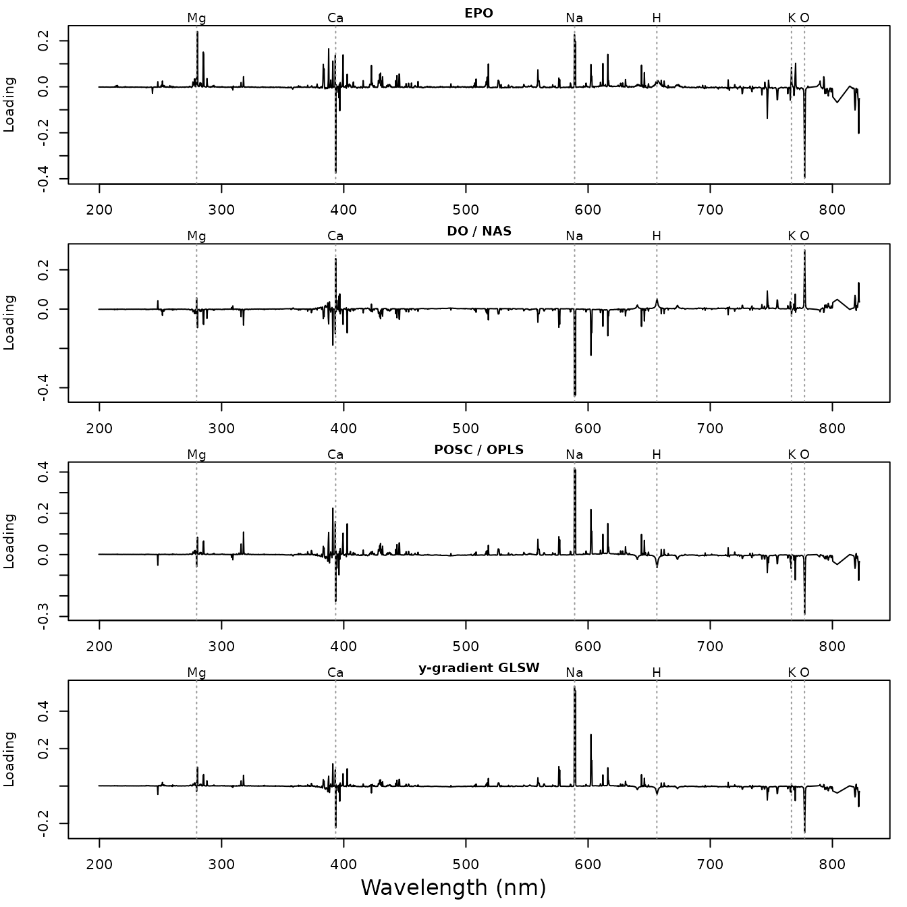

Removing unwanted variation: a comparison of orthogonalization methods
Source:vignettes/orthogonalization.Rmd
orthogonalization.RmdMost of the variation in a set of LIBS spectra has nothing to do with the property we want to predict. Plasma conditions change the total emitted intensity from shot to shot and sample to sample, and every element in the sample adds its own lines. Orthogonalization methods try to identify this unwanted variation and remove it before calibration.
specProc implements two families of such methods, which differ in how they define “unwanted”. Each is available as a function and as a recipes step:
| Family | Unwanted variation is… | Recipe steps |
|---|---|---|
| External | the variation between spectra that should be identical (clutter) |
step_epo(), step_glsw()
|
| Response-orthogonal | the variation in \mathbf{X} uncorrelated with the response \mathbf{y} |
step_osc(),
step_direct_orthogonal(), step_direct_osc(),
step_projected_osc(),
step_y_gradient_glsw()
|
This vignette applies all of them to the same problem, predicting the potassium content of forage samples, and asks three questions:
- What does each method remove?
- Does removing it improve predictions on samples not used to fit the filter?
- Which methods are actually the same method?
Each method is a step in a recipe, combined with a PLS model in a tidymodels workflow. The workflow re-estimates the filter on the analysis set of every resample, so supervised filters never see the samples they are validated on, and the filter is tuned together with the model.
# parsnip attaches the mixOmics engine, which attaches MASS. Attaching it
# first keeps dplyr::select() (attached with recipes) ahead of MASS::select()
suppressPackageStartupMessages(library(mixOmics))
library(specProc)
library(recipes)
library(parsnip)
library(workflows)
library(tune)
library(rsample)
library(yardstick)
library(plsmod)
library(dplyr)
library(tidyr)
library(purrr)
library(ggplot2)
data(fourrage)
elements <- c("Ca", "Cl", "Cu", "Fe", "Mg", "Mn", "Mo", "P", "K", "Na", "S", "Zn")
raw_channels <- setdiff(names(fourrage), c("Measurement", "Sample", elements))
wl <- as.numeric(raw_channels)
dim(fourrage)
#> [1] 368 7166fourrage contains 368 measurements of 365 forage samples
(three samples were measured twice). Each measurement is the mean of 8
laser shots. The target is potassium, which is available for every
measurement and spans 0.5 to 4%.
Preparing the spectra
Two practical steps come first:
- Channel overlap. Two spectrometers overlap near 766 nm, so a few channels repeat wavelengths already covered. We drop them.
-
Binning. The GLSW filters are p \times p matrices, and
glsw()returns them as such: with 7152 channels, each would take about 400 MB. The recipe steps store them in factored form, but summing 4 adjacent channels still speeds up every method, at the cost of some spectral resolution. Most emission lines in these spectra span several channels, so little information is lost.
Finally, step_snv() normalizes each spectrum. It works
on each spectrum alone, so it can be applied once to all the data.
keep <- wl > cummax(c(-Inf, wl[-length(wl)]))
sum(!keep) # overlapping channels dropped
#> [1] 6
bin <- ceiling(seq_len(sum(keep)) / 4)
wlb <- as.vector(tapply(wl[keep], bin, mean))
channels <- sprintf("%.3f", wlb)
binned <- as.matrix(fourrage[raw_channels[keep]]) |>
t() |> rowsum(bin) |> t() |>
as_tibble(.name_repair = \(nm) channels)
unprocessed <- fourrage |>
select(Sample, all_of(elements)) |>
mutate(total = rowSums(fourrage[raw_channels])) |>
bind_cols(binned)
spectra <- recipe(K ~ ., data = unprocessed) |>
update_role(Sample, total, all_of(setdiff(elements, "K")), new_role = "id") |>
step_snv(all_predictors()) |>
prep() |>
bake(new_data = NULL)
dim(spectra)
#> [1] 368 1801Identifying the unwanted variation
A principal component analysis shows where the variance lies. We correlate the scores of the first five components with the total emitted intensity and with the reference contents of several elements:
covariates <- spectra |> select(total, K, Ca, Mg, Na, P, S)
pca_summary <- function(x, label) {
pc <- prcomp(x)
list(
variance = tibble(data = label, component = paste0("PC", 1:5),
percent = round(100 * pc$sdev[1:5]^2 / sum(pc$sdev^2), 1)),
correlations = cor(pc$x[, 1:5], covariates, use = "pairwise.complete.obs") |>
round(2) |>
as_tibble(rownames = "component") |>
mutate(data = label, .before = 1)
)
}
raw_pca <- pca_summary(as.matrix(binned), "raw")
snv_pca <- pca_summary(as.matrix(spectra[channels]), "SNV")
bind_rows(raw_pca$variance, snv_pca$variance) |>
pivot_wider(names_from = component, values_from = percent) # % variance
#> # A tibble: 2 × 6
#> data PC1 PC2 PC3 PC4 PC5
#> <chr> <dbl> <dbl> <dbl> <dbl> <dbl>
#> 1 raw 63.2 18.5 6.1 3.2 2.5
#> 2 SNV 39.5 29.2 10.9 5.2 3.8
raw_pca$correlations
#> # A tibble: 5 × 9
#> data component total K Ca Mg Na P S
#> <chr> <chr> <dbl> <dbl> <dbl> <dbl> <dbl> <dbl> <dbl>
#> 1 raw PC1 -0.98 -0.28 -0.21 -0.32 -0.2 -0.3 -0.42
#> 2 raw PC2 -0.1 -0.22 0.26 0.41 0.77 0.19 0.16
#> 3 raw PC3 -0.02 0.48 -0.52 -0.11 0.1 0.14 0.06
#> 4 raw PC4 0.15 -0.25 -0.19 -0.26 -0.25 -0.26 -0.22
#> 5 raw PC5 0.01 0.08 0.33 -0.06 -0.06 -0.11 0.05
snv_pca$correlations
#> # A tibble: 5 × 9
#> data component total K Ca Mg Na P S
#> <chr> <chr> <dbl> <dbl> <dbl> <dbl> <dbl> <dbl> <dbl>
#> 1 SNV PC1 -0.71 -0.15 -0.33 -0.55 -0.62 -0.39 -0.47
#> 2 SNV PC2 -0.6 -0.36 0.05 0.13 0.51 -0.04 -0.13
#> 3 SNV PC3 0.01 0.47 -0.57 -0.15 0.03 0.12 0.05
#> 4 SNV PC4 0.21 -0.2 0.02 -0.17 -0.25 -0.26 -0.12
#> 5 SNV PC5 0.05 -0.29 -0.4 0.11 -0.06 -0.01 -0.05The raw spectra are dominated by one structure. The first component explains 63.2% of the variance, and its scores are almost perfectly correlated with the total intensity. This is the multiplicative effect of the plasma: a hotter or denser plasma raises all lines together. SNV removes most of it, but the SNV spectra still carry several structures that have little to do with potassium:
- PC1 and PC2 still follow the total intensity, and also sodium and magnesium. After SNV, intensity changes appear as changes in line ratios, which a per-spectrum scaling cannot remove.
- PC3 contrasts potassium with calcium, the main cation that varies in the opposite direction.
How much of the SNV variance is related to potassium at all? Regressing each channel on \mathbf{y} gives the share of variance that a linear function of potassium content explains:
x_centered <- scale(as.matrix(spectra[channels]), scale = FALSE)
k_centered <- spectra$K - mean(spectra$K)
y_part <- k_centered %*% crossprod(k_centered, x_centered) / sum(k_centered^2)
y_share <- 100 * sum(y_part^2) / sum(x_centered^2)
round(y_share, 1) # % of the variance
#> [1] 8Only about 8% of the variance is directly related to potassium. The remaining variance is the target of the orthogonalization methods.
Calibration and test sets
We set aside one third of the samples as a test set. Filters and PLS models are always fitted on the calibration set only, and every tuning decision uses cross-validation within the calibration set, with folds formed by sample so that the two measurements of a sample stay together.
The external methods need clutter: spectra that should be identical
but are not. The three samples measured twice provide this. Their
difference spectra describe how the measurement of a given material
varies from one session to the next. We keep these three samples in the
calibration set, so the test split is made by hand with
rsample::make_splits():
set.seed(1)
twice <- spectra |> count(Sample) |> filter(n > 1) |> pull(Sample)
test_samples <- sample(setdiff(unique(spectra$Sample), twice),
round(n_distinct(spectra$Sample) / 3))
is_test <- spectra$Sample %in% test_samples
split <- make_splits(list(analysis = which(!is_test), assessment = which(is_test)),
data = spectra)
calibration <- analysis(split)
test <- assessment(split)
c(calibration = nrow(calibration), test = nrow(test))
#> calibration test
#> 246 122
set.seed(2)
folds <- group_vfold_cv(calibration, group = Sample, v = 5)
# clutter: difference spectra of the samples measured twice
clutter <- spectra |>
filter(Sample %in% twice) |>
group_by(Sample) |>
summarise(across(all_of(channels), \(v) last(v) - first(v))) |>
select(-Sample)Three difference spectra are a small clutter matrix. In practice, repeated measurements of a few reference materials over several sessions would describe this variation better.
The recipes
Every method is a recipe step added to the same base recipe. The
filter settings are tuned: the number of components removed, or, for
GLSW, the strength \alpha of the
down-weighting, relative to the largest eigenvalue of the clutter.
Because the PLS model also has a num_comp parameter, the
filter’s is named filter.
base_recipe <- recipe(K ~ ., data = calibration) |>
update_role(Sample, total, all_of(setdiff(elements, "K")), new_role = "id")
filter_steps <- list(
`none` = identity,
# External: the clutter directions are projected out ...
`EPO` = \(rec, k) step_epo(rec, all_predictors(), clutter = clutter, num_comp = k),
# ... or down-weighted
`GLSW` = \(rec, k) step_glsw(rec, all_predictors(), clutter = clutter, alpha = k),
# Response-orthogonal
`OSC (Wold)` = \(rec, k) step_osc(rec, all_predictors(), method = "wold", num_comp = k),
`OSC (Sjoblom)` = \(rec, k) step_osc(rec, all_predictors(), method = "sjoblom", num_comp = k),
`OSC (Fearn)` = \(rec, k) step_osc(rec, all_predictors(), method = "fearn", num_comp = k),
`DO` = \(rec, k) step_direct_orthogonal(rec, all_predictors(), num_comp = k),
`DOSC` = \(rec, k) step_direct_osc(rec, all_predictors(), num_comp = k),
`POSC / OPLS` = \(rec, k) step_projected_osc(rec, all_predictors(), num_comp = k),
`y-gradient GLSW` = \(rec, k) step_y_gradient_glsw(rec, all_predictors(), alpha = k)
)
filter_grid <- list(
`none` = NA, EPO = 1:3, GLSW = 10^-(0:4), `OSC (Wold)` = 1:4, `OSC (Sjoblom)` = 1:4,
`OSC (Fearn)` = 1:4, DO = 1:4, DOSC = 1:4, `POSC / OPLS` = 1:4, `y-gradient GLSW` = 10^-(0:4)
)
method_recipe <- function(method, k = tune("filter")) {
if (method == "none") base_recipe else filter_steps[[method]](base_recipe, k)
}opls() has no step: it wraps the Bioconductor package
ropls and returns a fitted model rather than a filter.
step_projected_osc() gives the same filtered data, as shown
below.
What does each method remove?
We prep each recipe on the calibration set with a comparable setting (2 components, or \alpha = 0.01 for GLSW). For the removed part of the spectra, \mathbf{X} - f(\mathbf{X}), we compute:
-
removed: its share of the calibration variance, in percent. - The correlations of its first principal component with the total intensity and with the element contents (absolute values).
x_cal <- as.matrix(calibration[channels])
settings <- c(EPO = 2, GLSW = 0.01, `OSC (Wold)` = 2, `OSC (Sjoblom)` = 2, `OSC (Fearn)` = 2,
DO = 2, DOSC = 2, `POSC / OPLS` = 2, `y-gradient GLSW` = 0.01)
removed_parts <- imap(settings, \(k, method) {
corrected <- method_recipe(method, k) |> prep() |> bake(new_data = NULL)
scale(x_cal - as.matrix(corrected[channels]), scale = FALSE)
})
removed <- imap(removed_parts, \(r, method) {
s <- svd(r, nu = 1, nv = 1)
cor(s$u, select(calibration, total, K, Ca, Mg, Na, P, S), use = "pairwise.complete.obs") |>
abs() |>
as_tibble() |>
mutate(method = method,
removed = 100 * sum(r^2) / sum(scale(x_cal, scale = FALSE)^2),
.before = 1)
}) |>
bind_rows() |>
mutate(across(where(is.numeric), \(v) round(v, 2)))
removed
#> # A tibble: 9 × 9
#> method removed total K Ca Mg Na P S
#> <chr> <dbl> <dbl> <dbl> <dbl> <dbl> <dbl> <dbl> <dbl>
#> 1 EPO 44.2 0.9 0.2 0.28 0.42 0.33 0.32 0.46
#> 2 GLSW 25.3 0.84 0.1 0.37 0.47 0.44 0.31 0.46
#> 3 OSC (Wold) 63.2 0.65 0 0.36 0.54 0.67 0.32 0.45
#> 4 OSC (Sjoblom) 68.4 0.74 0.12 0.38 0.51 0.6 0.35 0.49
#> 5 OSC (Fearn) 62.6 0.61 0 0.41 0.54 0.69 0.32 0.45
#> 6 DO 67.9 0.73 0.11 0.38 0.52 0.61 0.34 0.49
#> 7 DOSC 65.1 0.67 0 0.36 0.51 0.66 0.3 0.45
#> 8 POSC / OPLS 59.7 0.63 0 0.61 0.56 0.55 0.31 0.47
#> 9 y-gradient GLSW 68.4 0.72 0.11 0.37 0.52 0.62 0.35 0.48The table shows what each family targets:
- The response-orthogonal methods remove the most variance, about 60–68% with only two components. The removed part is uncorrelated with potassium, exactly so for Wold’s and Fearn’s OSC, DOSC and POSC. DO and Sjöblom’s OSC keep a small correlation, because they remove the principal directions of the \mathbf{y}-orthogonal space, and the scores of \mathbf{X} on these directions need not be orthogonal to \mathbf{y}. What these methods remove is strongly related to the total intensity and to sodium, the structures found by the PCA above.
- EPO and GLSW remove less, and what they remove is mostly the total intensity (correlations of 0.84 and 0.9). When a sample is measured again, what changes most is the plasma, not the composition. It also shows that SNV does not remove all intensity effects.
- y-gradient GLSW removes about 68% of the variance at \alpha = 0.01, again related to sodium and intensity. It down-weights directions rather than removing them, so \alpha sets its strength continuously, from almost nothing to a projection like EPO.
The first direction of the removed part (the loading) shows which emission lines are involved:
lines_nm <- c(Mg = 279.55, Ca = 393.37, Na = 588.99, H = 656.28, K = 766.49, O = 777.19)
removed_parts[c("EPO", "DO", "POSC / OPLS", "y-gradient GLSW")] |>
imap(\(r, method) tibble(method = method, wavelength = wlb,
loading = svd(r, nu = 0, nv = 1)$v[, 1])) |>
bind_rows() |>
mutate(method = factor(method, levels = c("EPO", "DO", "POSC / OPLS", "y-gradient GLSW"))) |>
ggplot(aes(wavelength, loading)) +
geom_vline(xintercept = lines_nm, colour = "grey60", linetype = "dotted") +
geom_line(linewidth = 0.3) +
geom_text(data = tibble(wavelength = lines_nm, label = names(lines_nm)),
aes(wavelength, Inf, label = label), vjust = 1.2, size = 2.5, inherit.aes = FALSE) +
facet_wrap(~ method, ncol = 1, scales = "free_y") +
labs(x = "Wavelength (nm)", y = "Loading") +
theme_bw()
The sign of each loading is arbitrary. The four directions share a common pattern: the emission lines of the sample’s metals (Mg, Ca and above all the Na doublet at 589 nm) vary against the O I line at 777 nm and the continuum above 800 nm. For a measurement in air, the O I line comes from both the atmosphere and the organic matrix, so this contrast likely reflects how much material is ablated and how the plasma develops rather than the composition of the sample. The sodium doublet is the largest feature for the response-orthogonal methods and y-gradient GLSW: its variation between samples is large and independent of potassium. The potassium lines barely appear in these directions.
Does removing it improve predictions?
We now combine each recipe with a PLS model and tune both the filter
parameter and the number of PLS components (up to 15) with
tune_grid() on the grouped folds of the calibration
set:
# mixOmics scales every channel by default; scale = FALSE only centers
pls_model <- pls(num_comp = tune()) |>
set_mode("regression") |>
set_engine("mixOmics", scale = FALSE)
tune_method <- function(method) {
grid <- tibble(num_comp = 1:15)
if (method != "none") grid <- expand_grid(filter = filter_grid[[method]], grid)
suppressMessages(tune_grid(workflow(method_recipe(method), pls_model),
resamples = folds, grid = grid, metrics = metric_set(rmse)))
}
tuned <- map(set_names(names(filter_steps)), tune_method)The best setting of each method is then refitted to the whole
calibration set and evaluated on the test set with
last_fit():
final_fits <- imap(tuned, \(res, method) {
workflow(method_recipe(method), pls_model) |>
finalize_workflow(select_best(res, metric = "rmse")) |>
last_fit(split, metrics = metric_set(rmse))
})
settings_chosen <- imap(tuned, \(res, method) {
best <- show_best(res, metric = "rmse", n = 1)
tibble(method = method,
filter = if (method == "none") NA_real_ else best$filter,
pls_ncomp = best$num_comp,
RMSECV = best$mean)
}) |>
bind_rows()
test_predictions <- final_fits |>
map(\(f) collect_predictions(f) |> select(.row, K, .pred)) |>
bind_rows(.id = "method") |>
pivot_wider(names_from = method, values_from = .pred)With 122 test spectra, the test error itself is uncertain. Because
all methods predict the same test samples, we compare each one with
plain PLS (none) using a paired bootstrap of the test
samples. diff_low and diff_high bound a 95%
interval for the difference in RMSEP; negative values favor the
filter.
methods <- names(filter_steps)
rmse_of <- \(d) summarise(d, across(all_of(methods), \(p) sqrt(mean((p - K)^2))))
set.seed(3)
boot_diff <- bootstraps(test_predictions, times = 2000) |>
mutate(rmse = map(splits, \(s) rmse_of(analysis(s)))) |>
select(rmse) |>
unnest(rmse) |>
mutate(across(all_of(methods), \(v) v - none))
comparison <- settings_chosen |>
left_join(rmse_of(test_predictions) |> pivot_longer(everything(), names_to = "method",
values_to = "RMSEP"), by = "method") |>
left_join(boot_diff |>
pivot_longer(everything(), names_to = "method") |>
group_by(method) |>
summarise(diff_low = quantile(value, 0.025), diff_high = quantile(value, 0.975)),
by = "method") |>
mutate(across(c(RMSECV, RMSEP, diff_low, diff_high), \(v) round(v, 3)))
comparison
#> # A tibble: 10 × 7
#> method filter pls_ncomp RMSECV RMSEP diff_low diff_high
#> <chr> <dbl> <int> <dbl> <dbl> <dbl> <dbl>
#> 1 none NA 10 0.294 0.282 0 0
#> 2 EPO 2 9 0.295 0.276 -0.017 0.003
#> 3 GLSW 0.01 9 0.291 0.284 -0.009 0.012
#> 4 OSC (Wold) 3 7 0.293 0.286 -0.004 0.011
#> 5 OSC (Sjoblom) 1 9 0.296 0.297 0.007 0.023
#> 6 OSC (Fearn) 4 7 0.294 0.283 -0.006 0.01
#> 7 DO 1 9 0.294 0.284 0.001 0.004
#> 8 DOSC 1 5 0.307 0.281 -0.022 0.023
#> 9 POSC / OPLS 4 6 0.294 0.282 0 0
#> 10 y-gradient GLSW 0.01 2 0.29 0.275 -0.019 0.006
c(null_RMSEP = round(sqrt(mean((mean(calibration$K) - test$K)^2)), 3))
#> null_RMSEP
#> 0.534All models predict potassium far better than the null model, which predicts the calibration mean for every sample. The comparison with plain PLS:
- No filter improves predictions measurably . The intervals for the difference with plain PLS include zero or favor plain PLS, and the differences in RMSEP are a few hundredths of a percent of potassium, against a typical error of about 0.28%.
-
Filtering mostly moves components from PLS to the
filter. The component-based filters remove components and need
fewer PLS components in return (compare
pls_ncompwith the 10 components of plain PLS); the total model complexity hardly changes. - Some filtered models are plain PLS in disguise. The POSC / OPLS models give exactly the same test predictions as plain PLS (both bootstrap bounds are 0), as the next section explains.
- The most parsimonious model is the y-gradient GLSW model, with 2 PLS components, but its RMSEP is not distinguishable from that of plain PLS.
The external filters could not help much: their clutter comes from three samples, and the main thing it describes, the intensity effect, is variation PLS already learns to ignore from 246 calibration spectra.
Which methods are the same method?
Several functions compute the same filter, or a filter that cannot change PLS predictions:
# POSC and O2PLS with a single response: both give OPLS-filtered data
all.equal(as.matrix(projected_osc(x_cal, calibration$K, ncomp = 3)$correction),
as.matrix(o2pls(x_cal, calibration$K, ncomp = 1, nx = 2)$correction),
check.attributes = FALSE)
#> [1] TRUE
# OPLS filter with 2 orthogonal components + 1-component PLS
# gives the same predictions as a 3-component PLS model
predict_with <- function(rec, ncomp) {
workflow(rec, set_args(pls_model, num_comp = ncomp)) |>
fit(data = calibration) |>
predict(new_data = test) |>
pull(.pred)
}
all.equal(predict_with(method_recipe("POSC / OPLS", 2), 1),
predict_with(base_recipe, 3))
#> [1] TRUEThe first result means that projected_osc() and
o2pls() (with one response) are interchangeable. The second
explains why OPLS-filtered models can reproduce plain PLS predictions
exactly. OPLS splits the systematic variation of a PLS model into a
predictive and an orthogonal part, but the model is the same (Trygg and
Wold, 2002; Kemsley and Tapp, 2009). These filters are still useful for
interpretation: the orthogonal components show what varies in the
spectra independently of potassium, as in the figure above.
The main pitfall: fitting the filter before validating
The response-orthogonal filters use \mathbf{y}. If a filter is fitted once on all calibration samples and cross-validation is run afterwards, the validation samples have already shaped the filter. We prep a DOSC recipe on the whole calibration set, bake the data, and only then cross-validate a PLS model on the filtered spectra:
leak <- map(c(1, 2, 4, 8), \(k) {
filtered_recipe <- method_recipe("DOSC", k) |> prep()
filtered_cal <- bake(filtered_recipe, new_data = NULL)
filtered_folds <- manual_rset(
map(folds$splits, \(s) make_splits(list(analysis = s$in_id, assessment = complement(s)),
data = filtered_cal)),
folds$id)
cv <- tune_grid(workflow(base_recipe, pls_model), resamples = filtered_folds,
grid = tibble(num_comp = 1:15), metrics = metric_set(rmse))
best <- select_best(cv, metric = "rmse")
test_pred <- finalize_workflow(workflow(base_recipe, pls_model), best) |>
fit(data = filtered_cal) |>
predict(new_data = bake(filtered_recipe, new_data = test)) |>
pull(.pred)
tibble(filter = k, pls_ncomp = best$num_comp,
leaky_RMSECV = show_best(cv, metric = "rmse", n = 1)$mean,
RMSEP = sqrt(mean((test_pred - test$K)^2)))
}) |>
bind_rows() |>
mutate(across(c(leaky_RMSECV, RMSEP), \(v) round(v, 3)))
leak
#> # A tibble: 4 × 4
#> filter pls_ncomp leaky_RMSECV RMSEP
#> <dbl> <int> <dbl> <dbl>
#> 1 1 15 0.024 0.323
#> 2 2 15 0.002 0.322
#> 3 4 15 0.001 0.322
#> 4 8 15 0 0.322With the filter fitted before cross-validation, the cross-validated
error is close to zero, while the error on the test set is higher than
for plain PLS. DOSC first projects \mathbf{y} onto the space of \mathbf{X}. With far more channels than
samples, this projection reproduces the calibration values almost
exactly, and so does the filtered \mathbf{X}. The calibration vignette
(vignette("calibration", package = "specProc")) shows a
milder version of the same bias for the OPLS filter. In the comparison
above, the filter is a step of the workflow’s recipe, so
tune_grid() refits it inside every fold and this bias
cannot occur.
How much of the signal serves the prediction?
The filters above remove variation; the net analyte signal (NAS) asks
the complementary question. The NAS of a spectrum is the part that is
unique to the analyte, orthogonal to the contributions of all other
constituents. For an inverse model such as PLS, it follows from the
regression vector \mathbf{b} (Lorber
et al., 1997; Faber, 1998): the NAS of a sample is (\hat{y}_i - \bar{y}) / \|\mathbf{b}\|.
nas() computes it together with the figures of merit of the
model (Olivieri et al., 2006):
- Sensitivity, 1 / \|\mathbf{b}\|: the NAS produced by 1% of potassium, in SNV units.
- Selectivity: the fraction of each (centered) spectrum that is used for prediction.
- Limit of detection and of quantification, 3.3\,\sigma / \mathrm{SEN} and 10\,\sigma / \mathrm{SEN}, where \sigma is the noise level of the spectra.
We estimate \sigma from the three samples measured twice: the standard deviation of their difference spectra, divided by \sqrt{2}. This is a repeatability between measurements, which includes the plasma effects seen above, not the noise of the detector alone.
noise <- sqrt(mean(as.matrix(clutter)^2) / 2)
merit <- map(c(`5 components` = 5, `10 components` = 10), \(a) {
nas(x_cal, calibration$K, ncomp = a, noise = noise)$figures_of_merit
}) |>
as_tibble() |>
mutate(figure = names(nas(x_cal, calibration$K, ncomp = 5, noise = noise)$figures_of_merit),
.before = 1) |>
mutate(across(-figure, \(v) round(v, 3)))
merit
#> # A tibble: 5 × 3
#> figure `5 components` `10 components`
#> <chr> <dbl> <dbl>
#> 1 sensitivity 2.82 1.3
#> 2 selectivity 0.171 0.086
#> 3 analytical_sensitivity 23.6 10.9
#> 4 lod 0.14 0.304
#> 5 loq 0.424 0.921
# selectivity of the test samples, 10-component model
fit_nas <- nas(x_cal, calibration$K, ncomp = 10, noise = noise)
summary(predict(fit_nas, test[channels])$selectivity)
#> Min. 1st Qu. Median Mean 3rd Qu. Max.
#> 0.00043 0.03500 0.07078 0.08477 0.12457 0.27872Two results stand out:
- Only a small part of each spectrum carries potassium information. With 10 components, the mean selectivity is 0.086: less than a tenth of the centered signal is used for prediction, the rest is shared with other constituents or is plasma variation. This is the same conclusion as the variance share computed at the start, seen from the model’s side.
- More components trade sensitivity for selectivity. Going from 5 to 10 components more than halves the sensitivity, because the regression vector must avoid more interferent directions, and more than doubles the limit of detection, to 0.3% K. The 10-component model still predicts better: its lower sensitivity is the price of being less affected by the interferents.
These limits account for the repeatability of the spectra only, not
for the errors of the reference analyses or of the model itself, so they
are lower bounds. Before specProc 0.4.0, nas() returned
spectra filtered by direct orthogonalization;
direct_orthogonal() computes that filter.
Summary
- Identify first. A PCA with correlations to known factors (total intensity, other elements) shows what the unwanted variation is. Here, it is mainly the plasma intensity effect and the variation of sodium and calcium.
- External methods remove what you tell them to. EPO and GLSW are only as good as the clutter. Differences between repeated measurements of the same material captured the intensity effect, which SNV leaves in part.
- Response-orthogonal methods remove a lot of variance, but add no information. They make models smaller and easier to interpret, not more accurate: the removed variation is variation that PLS already ignores. Some (OPLS/POSC, O2PLS, Fearn’s OSC) can give exactly the PLS predictions.
- Validate honestly. Put supervised filters in the recipe of a workflow, so they are refitted inside each fold. Otherwise the cross-validated error can be meaningless.
References
- Andersson, C.A. (1999). Direct orthogonalization. Chemometrics and Intelligent Laboratory Systems, 47(1):51–63.
- Fearn, T. (2000). On orthogonal signal correction. Chemometrics and Intelligent Laboratory Systems, 50(1):47–52.
- Faber, N.M. (1998). Efficient computation of net analyte signal vector in inverse multivariate calibration models. Analytical Chemistry, 70(23):5108–5110.
- Kemsley, E.K., Tapp, H.S. (2009). OPLS filtered data can be obtained directly from non-orthogonalized PLS1. Journal of Chemometrics, 23(5):263–264.
- Lorber, A., Faber, K., Kowalski, B.R. (1997). Net analyte signal calculation in multivariate calibration. Analytical Chemistry, 69(8):1620–1626.
- Martens, H., Høy, M., Wise, B.M., Bro, R., Brockhoff, P.B. (2003). Pre-whitening of data by covariance-weighted preprocessing. Journal of Chemometrics, 17(3):153–165.
- Olivieri, A.C., Faber, N.M., Ferré, J., Boqué, R., Kalivas, J.H., Mark, H. (2006). Uncertainty estimation and figures of merit for multivariate calibration (IUPAC Technical Report). Pure and Applied Chemistry, 78(3):633–661.
- Roger, J.-M., Chauchard, F., Bellon-Maurel, V. (2003). EPO-PLS external parameter orthogonalisation of PLS application to temperature-independent measurement of sugar content of intact fruits. Chemometrics and Intelligent Laboratory Systems, 66(2):191–204.
- Trygg, J., Wold, S. (2002). Orthogonal projections to latent structures (O-PLS). Journal of Chemometrics, 16(3):119–128.
- Westerhuis, J.A., de Jong, S., Smilde, A.K. (2001). Direct orthogonal signal correction. Chemometrics and Intelligent Laboratory Systems, 56(1):13–25.
- Wold, S., Antti, H., Lindgren, F., Öhman, J. (1998). Orthogonal signal correction of near-infrared spectra. Chemometrics and Intelligent Laboratory Systems, 44(1):175–185.